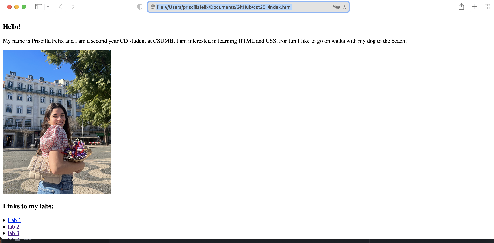
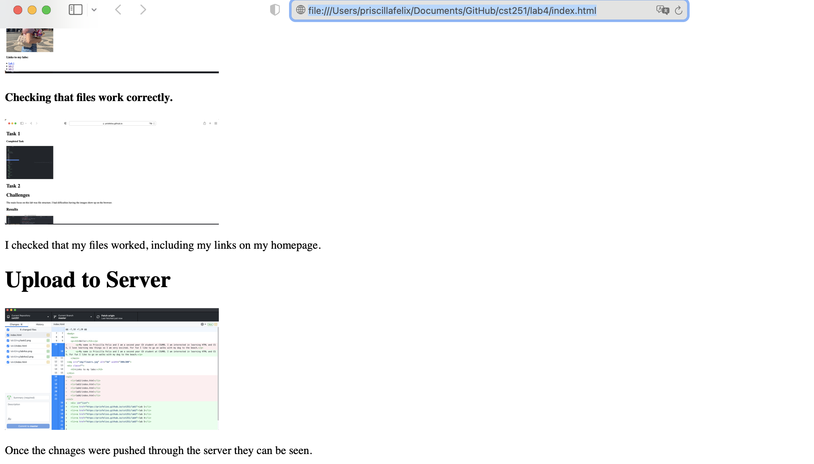

In Lab 4 we learned about file transfers. This included learning what a file transfer is, testing locally,local vs server, and file transfer protocol.
Before uploading to the server I had to test my files locally to make sure the files were working correctly.
I checked that my files worked, including my links on my homepage.
Once the changes were pushed through the server they can be seen.
I did not really come across any challenges for this lab, it was very straight forward.